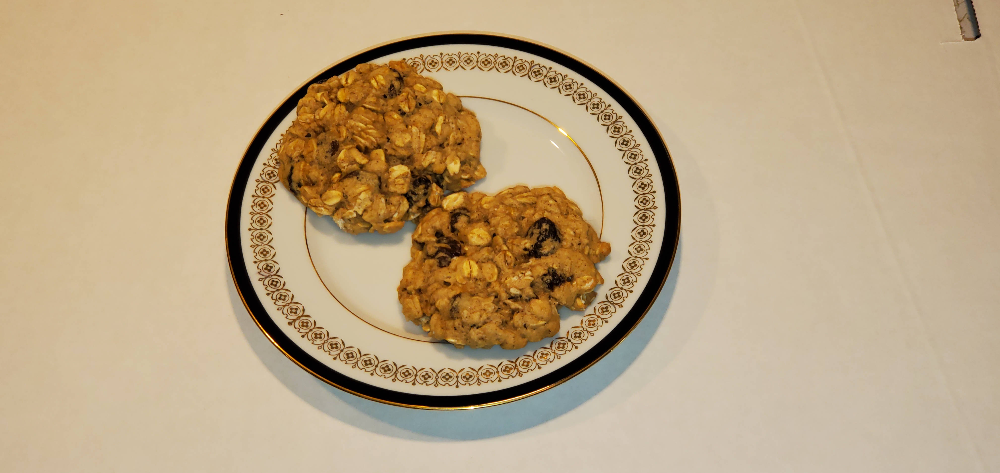

This is a recipe for "Arlene's Oatmeal Raisin Cookies"

Ingredients
- 1.5 cups of Pillsbury Best All-Purpose Flour
- 0.75 cup of brown sugar
- 0.5 cup of Domino Golden Sugar Premium Pure Cane
- 1 tsp. of baking soda
- 1 tsp. of cinnamon
- 0.5 tsp. of salt
- 2 eggs at room temperature, lightly beaten
- 0.5 cup of melted butter
- 1 tsp. of McCormick Pure Vanilla Extract
- 3 cups of Quaker Old Fashion Rolled Oats
- 1 cup of Sun-Maid Raisins
Directions
- Sift flower, brown sugar, golden sugar, baking soda, cinnamon, and salt (dry ingredients) into a large bowl, and whisk together.
- Put the eggs, melted butter, and vanilla extract (wet ingredients) into another bowl. Use an electric mixer to mix well.
- Add the wet ingredients to the dry ingredients and mix well.
- Add the rolled oats and raisins and mix until blended. (Don’t use the electric mixer on this step.)
- Use a stainless-steel ice cream scoop also known as a portion scoop to scoop out approximately 2 tbsp. of dough and release it into the palm of your hand. Roll the dough into round balls and place them on parchment paper in airtight containers.
- Place these containers into the refrigerator for 1 hour to 3 days. (The longer the chewier cookie.)
- When ready to bake cookies, take the airtight containers from the refrigerator, place the round balls of dough onto parchment paper covered cookie sheets. Press the balls flat with the wet bottom of a glass.
- Preheat you oven to 350 ° F.
- Place a cookie sheet on the center rack and bake for about 12 minutes until golden brown.
- Cool the cookies on the cookie sheet for 1 minute and then place them on parchment paper in airtight containers.
- Enjoy! (A friend told me the problem with these cookies is you can’t eat just one.)
Download Recipe